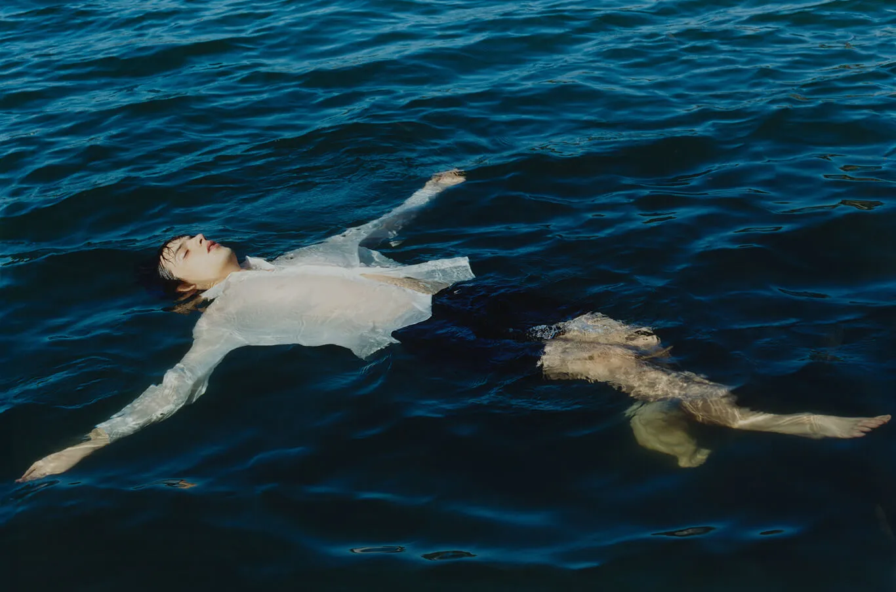
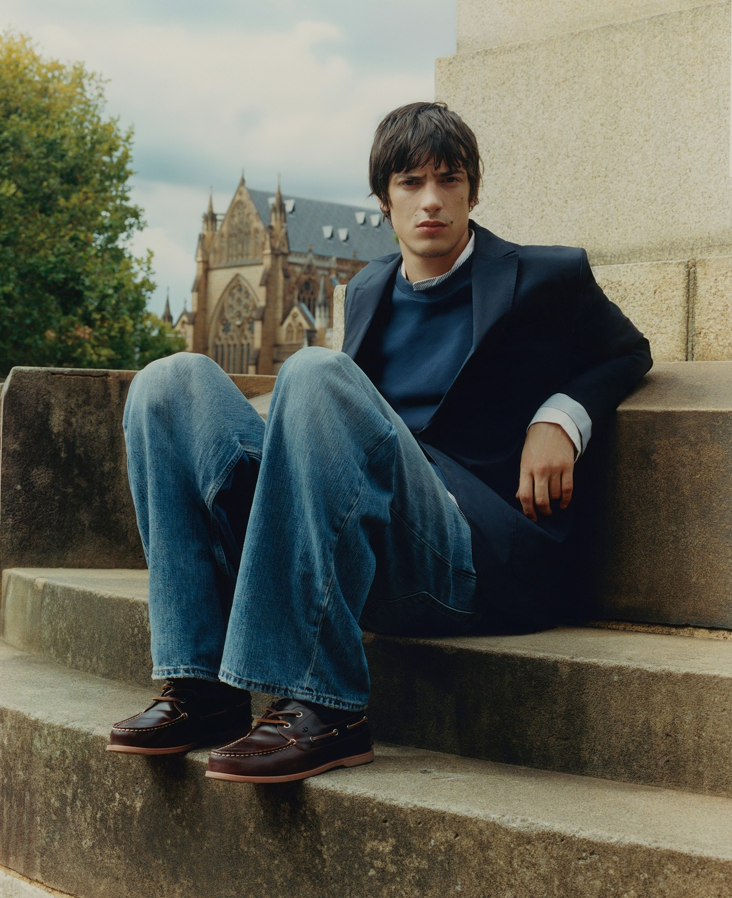

<style>
  .editorial-grid {
    --eg-text: #000;
    --eg-muted: #333;
    --eg-center: 460px;
    --eg-gap: 64px;
    --eg-sticky-top: 40px;
    padding: 40px 24px 0;
    color: var(--eg-text);
    background: #fff;
  }

  .editorial-grid__grid {
    display: grid;
    grid-template-columns: minmax(0, 1fr) minmax(0, var(--eg-center)) minmax(0, 1fr);
    grid-template-areas:
      ".     intro aside"
      "label body  aside"
      ".     media aside";
    column-gap: var(--eg-gap);
    max-width: 1440px;
    margin: 0 auto;
    /* Crops the sticky aside at the section edge without breaking position: sticky */
    clip-path: inset(0);
  }

  /* Intro */
  .editorial-grid__intro {
    grid-area: intro;
    margin-bottom: 110px;
  }

  .editorial-grid__logo {
    margin: 0 0 22px;
    font-family: proxima-nova, "Helvetica Neue", Arial, sans-serif;
    font-size: 22px;
    line-height: 1;
    letter-spacing: 0.12em;
    text-transform: uppercase;
  }

  .editorial-grid__logo-brand {
    font-weight: 700;
  }

  .editorial-grid__logo-name {
    font-weight: 300;
    margin-left: 0.35em;
  }

  .editorial-grid__tagline {
    margin: 0;
    font-family: baskerville, "Libre Baskerville", Georgia, serif;
    font-size: 15px;
    line-height: 1.45;
    max-width: 300px;
  }

  /* Label */
  .editorial-grid__label {
    grid-area: label;
    justify-self: center;
    margin: 0;
    font-family: baskerville, "Libre Baskerville", Georgia, serif;
    font-size: 12px;
    font-weight: 400;
    line-height: 1.35;
  }

  /* Body */
  .editorial-grid__body {
    grid-area: body;
    max-width: 310px;
    margin-bottom: 70px;
    font-family: proxima-nova, "Helvetica Neue", Arial, sans-serif;
    font-size: 12px;
    line-height: 1.4;
    color: var(--eg-muted);
  }

  .editorial-grid__body p {
    margin: 0 0 14px;
  }

  .editorial-grid__body p:last-child {
    margin-bottom: 0;
  }

  /* Centre image */
  .editorial-grid__media {
    grid-area: media;
    margin: 0;
  }

  .editorial-grid__media-img {
    display: block;
    width: 100%;
    height: auto;
  }

  /* Sticky aside
     Negative bottom margin stretches the aside past the grid, so the image keeps
     sticking while the section scrolls away and clip-path crops it from below. */
  .editorial-grid__aside {
    grid-area: aside;
    align-self: stretch;
    margin-bottom: -100vh;
  }

  .editorial-grid__sticky {
    position: sticky;
    top: var(--eg-sticky-top);
    width: 100%;
    max-width: 180px;
    margin: 0;
  }

  .editorial-grid__sticky-img {
    display: block;
    width: 100%;
    height: auto;
  }

  .editorial-grid__caption {
    margin: 8px 0 0;
    font-family: baskerville, "Libre Baskerville", Georgia, serif;
    font-size: 8px;
    line-height: 1.4;
    color: var(--eg-muted);
  }

  /* Tablet */
  @media (max-width: 991.98px) {
    .editorial-grid {
      --eg-center: 420px;
      --eg-gap: 32px;
    }

    .editorial-grid__sticky {
      max-width: 160px;
    }
  }

  /* Mobile: stack, sticky and crop off */
  @media (max-width: 767.98px) {
    .editorial-grid__grid {
      grid-template-columns: minmax(0, 1fr);
      grid-template-areas:
        "intro"
        "label"
        "body"
        "aside"
        "media";
      clip-path: none;
    }

    .editorial-grid__intro {
      margin-bottom: 56px;
    }

    .editorial-grid__label {
      justify-self: start;
      margin-bottom: 12px;
    }

    .editorial-grid__body {
      max-width: none;
      margin-bottom: 40px;
      font-size: 14px;
    }

    .editorial-grid__aside {
      margin-bottom: 40px;
    }

    .editorial-grid__sticky {
      position: static;
      max-width: 60%;
      margin-left: auto;
    }

    .editorial-grid__caption {
      font-size: 10px;
    }
  }
</style>

<section class="editorial-grid">
  <div class="editorial-grid__grid">

    <header class="editorial-grid__intro">
      <h1 class="editorial-grid__logo">
        <span class="editorial-grid__logo-brand">Brand</span><span class="editorial-grid__logo-name">Project</span>
      </h1>
      <p class="editorial-grid__tagline">A short tagline introducing the project or research platform shown below.</p>
    </header>

    <h2 class="editorial-grid__label">Why it Exists</h2>

    <div class="editorial-grid__body">
      <p>Opening paragraph setting up the idea — what problem or observation this section responds to.</p>
      <p>A second paragraph developing the thought further, building toward the image below.</p>
    </div>

    <div class="editorial-grid__media">
      
    </div>

    <aside class="editorial-grid__aside">
      <div class="editorial-grid__sticky">
        
        <p class="editorial-grid__caption">A short caption describing the sticky side image, which stays in view while this section scrolls.</p>
      </div>
    </aside>

  </div>
</section>
